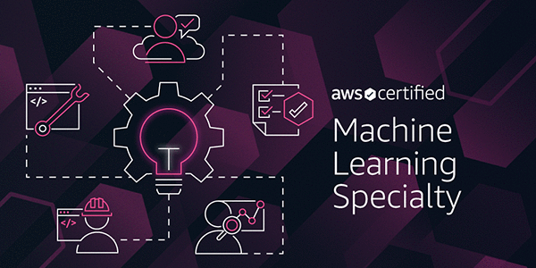
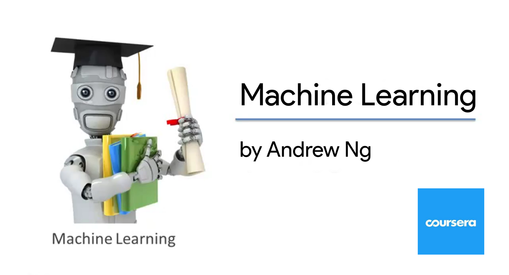
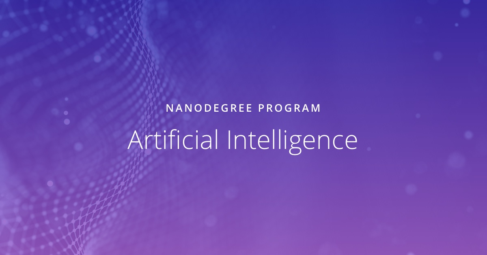

AWS Certified Machine Learning
Validated expertise in designing, implementing, and maintaining scalable ML solutions on AWS.
Hey, this is Daniel Legorreta, and this is my personal site. I live and have built my career over the years in the world of data. I find it difficult to apply any of the standard industry labels to myself—such as data scientist, ML engineer, MLOps specialist, data engineer, or any new title that might emerge in the coming months. This is because I have worked in various roles throughout my career. While I have focused more on model deployment and inference in recent years, I continue to explore how technology has evolved—from the fundamentals of data handling to the recent rise of LLMs, which have taken center stage in areas like code generation.
While technology is constantly changing, I personally believe that the fundamentals remain the foundation for any project. I try to apply my expertise across various areas in every project—combining the perspectives of a data engineer, an ML specialist, and a data scientist—to add value to the initiatives I’m involved in. Ultimately, having a "bias for action" helps you be more productive.
I typically tackle the following core challenges:
A lifelong learner, I am enthusiastic about researching and implementing cutting-edge techniques and algorithms in personal projects. I prioritize staying up-to-date with the latest technological advancements and have a deep appreciation for mathematics. My mathematical interests include algebraic topology, geometry, probability, and large graph theory, fields that I recognize as increasingly integral to Machine Learning, Deep Learning, and Computer Science.
Below are some research links on the relationship between mathematics and computer science:
My major was in pure mathematics; I graduated from the IPN in Mexico. I obtained solid foundations in mathematics and physics, which helped me to develop professionally in applications of mathematics to various problems in industry.
My thesis work was on the application of algebraic topology in economics (the paradox of social choice) under the supervision of Ph.D. Jesus Gonzales Espino.
In parallel, I worked as a research assistant in Time Series and Complex Systems applications at the UPIITA-IPN Complex Systems Laboratory, under the supervision of Ph.D. Lev Guzmán. I also worked as a research assistant in Mathematical Analysis under the supervision of Ph.D. Ramírez de Arellano.
I learned to program in C, C++, Python, R, SQL and Bash before finishing college, and since 2008 I have implemented and developed components and models for various business cases. Since 2012 I have specialized in forecasting models, developing them for various companies, including Softtek, where they predicted the demand for more than 100 applications and systems.
After 2015 I specialized in Machine Learning and started using Deep Learning for different problems. In general, most of my projects have been on three topics:
Recently I have worked on projects that require the implementation of NLP techniques, computer vision, deep learning and LLMs (agents).
Continuous education is key in an ever-evolving field like AI. The certifications and courses below represent my ongoing commitment to mastering cloud architecture, deep learning ecosystems, and scalable data engineering. (My academic background includes master's level coursework in pure mathematics.)

Validated expertise in designing, implementing, and maintaining scalable ML solutions on AWS.
Comprehensive specialization on building production-ready deep learning models in the Google Cloud ecosystem.

Stanford's foundational course that cemented my understanding of core predictive modeling.

Intensive program focusing on classical AI algorithms, optimization, and advanced heuristics.
Completed official AWS training tracks covering ML terminologies, CRISP-DM, and solving real business challenges in the cloud.
Specialization essential for mastering distributed data processing architectures like Apache Spark.